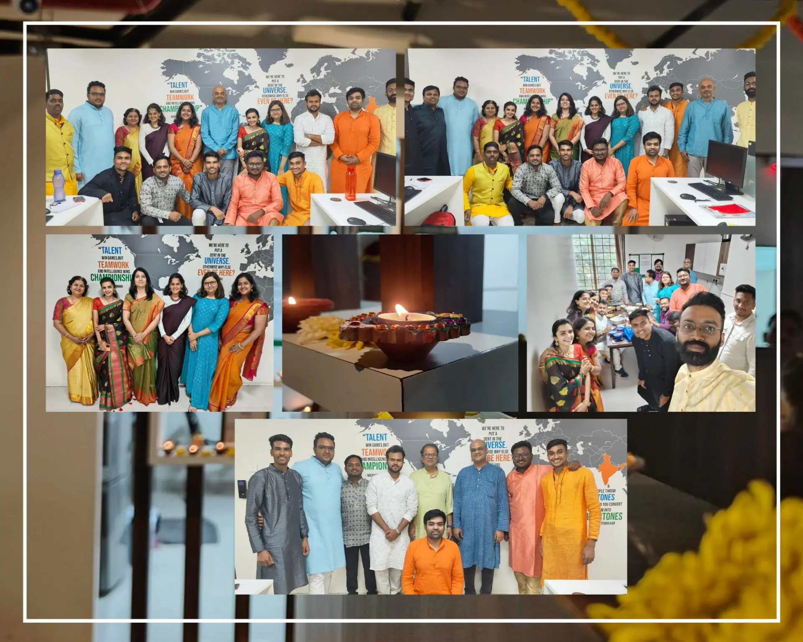
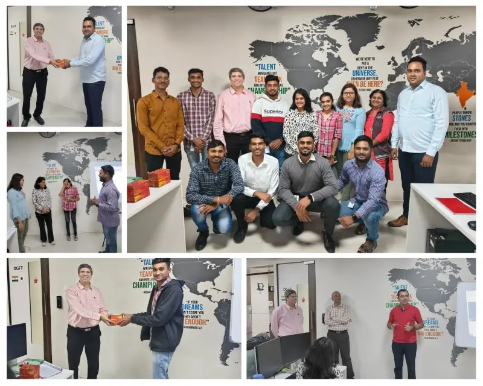

Diwali Celebration
At our office, we believe in blending tradition with creativity. As a precursor to Diwali celebration, we came together to decorate beautiful diyas, adding a touch of warmth and radiance to our workspace. As we intricately painted and adorned these traditional lamps, it reminded us of the significance of light and the joy it brings into our lives. 🪔✨
On the actual Diwali Celebration day, the office was adorned with vibrant rangoli, filling the air with festive colors. Colleagues exchanged sweets and heartfelt Diwali wishes, fostering a sense of unity. The sound of laughter and joy echoed through the halls as employees share stories. Traditional diyas illuminate the office, creating a warm and inviting atmosphere. A special photo session was organized to cherish the moments forever.
English Communication Course at DGFutureTech
The English Communication Course at DGFutureTech wrapped up today! 📓 Starting from September 21st to November 7th, 2023, the course was a journey of communication enhancement. Course participants had a wonderful "back-to-school" vibe with lively lectures, Q&A sessions, and brain-teasing homework assignments.
Today the course concluded and the students decided to surprise their trainer on the last day with a lively skit that showcased the "before" and "after" scenarios, making everyone laugh and driving home the importance of effective communication skills.